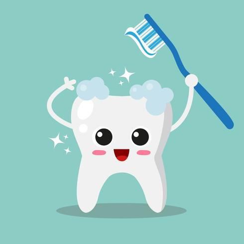

Actividad guiada
¿Cuantas veces se deben cepillar los diantes al dia?
Al menos 3 veces al dia.
¿Cuales son las tecnicas de cepillado?
La técnica de cepillado más recomendada es la de Bass, que consiste en colocar
el cepillo a 45° respecto a la encía, realizando movimientos vibratorios suaves
para limpiar el surco gingival
Agrega una imagen de una persona cepillandose los dientes

Agrega un video de tecnica de cepillado